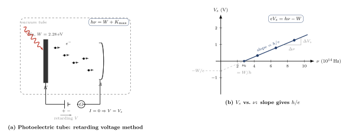

光电效应为什么粉碎了经典波动图景?
上一节我们讲了黑体辐射. Planck 为了让能量密度不在紫外端发散, 被迫假设腔壁上的谐振子只能以 $h\nu$ 的整数倍吸收和释放能量. 但 Planck 本人一直不相信光本身是量子的 —— 他只是把量子化当作一个数学技巧, 强加在物质 (谐振子) 一侧. 光, 在他那里, 仍然是麦克斯韦方程组所描述的那种光滑连续的电磁波.
真正把"光本身就是量子"这个信念端出来的, 是 1905 年伯尔尼专利局里一个 26 岁的三等技术专家. 那一年他发了四篇论文, 其中一篇的标题叫《关于光的产生和转化的一个启发性观点》. 他自己说这是"非常革命的". 后来的事实证明, 这篇比狭义相对论还要革命 —— 这是他 1921 年获得诺贝尔奖的那篇, 不是相对论.
我们今天就沿着爱因斯坦的思路, 用最朴素的逻辑把经典波动图景逼到死角, 然后看光量子是如何一刀切开这道死结的.
一、Hertz 的意外与 Lenard 的四条事实
故事要从 1887 年说起. 那一年赫兹 (Heinrich Hertz) 正在做他那著名的电磁波实验, 用一个火花间隙激发电磁波, 另一个火花间隙接收. 他发现接收端的火花, 当被盒子挡住时变弱, 当盒子开一条缝让紫外光照上来时又变强 —— 紫外光似乎让金属电极"更容易"放电. 赫兹把这个观察写进了论文, 但他本人并不太在意. 他的任务是验证麦克斯韦的电磁波, 这个"副产物"被他以脚注式的严谨记录下来, 然后搁置.
1899 年 J.J.汤姆孙证实, 从被光照射的金属表面飞出来的就是他两年前命名的"电子". 这下"光使金属放电"这件事有了具体图像: 光, 把电子打出来了. 这就是所谓的"光电效应 (photoelectric effect)".
真正把这个现象系统量化的是勒纳德 (Philipp Lenard). 他在 1902 年完成了一组在今天看来仍然令人震惊的精密实验, 把光电效应的实验事实归纳成四条:
- 存在性: 只要频率合适, 光照金属表面, 就有电子出射.
- 阈值频率 $\nu_0$: 当入射光频率低于某个 $\nu_0$ 时, 无论光照多强, 多久, 都没有任何电子出射.
- 最大动能: 出射电子有一个最大动能 $K_{\max}$, 它随入射光频率 $\nu$ 线性增加, 但与光强完全无关.
- 光强效应: 改变光强, 只改变单位时间飞出的电子数目, 不改变每个电子的最大动能.
这四条, 尤其是第二条和第三条, 在 1902 年没有任何经典理论能解释.
二、经典波动图景为什么必然失败
让我们用经典电磁学的语言把预言说清楚, 看看它在哪里撞墙.
按麦克斯韦, 电磁波的能量密度正比于电场振幅的平方 $E_0^2$, 也就是说正比于光强 $I$. 光入射金属表面, 就像海浪拍打海岸, 能量是连续地、持续地灌进来的. 金属内的电子感受到振荡电场 $E_0\cos(\omega t)$, 被推着做受迫振动, 慢慢地累积能量, 直到动能超过逸出所需的功 $W$ (从能级图像上说, 就是克服金属对电子的束缚), 就可以飞出来.
在这幅图景里有三个直接推论:
- 只要光照的时间足够长, 任何频率的光都能打出电子 —— 能量是累积的, 哪怕一次推一点点, 总有一天能把电子推出去.
- 电子的动能应该依赖光强, 因为光强决定了"海浪推多猛".
- 如果光强很弱, 我们应该能观察到一段"充能延迟": 电子从光开始照射到飞出, 之间要等很久.
这三点全错. Lenard 的第二条事实直接否定了第一条推论: 低于 $\nu_0$ 的光, 你照一百年也没用. 第三条事实直接否定了第二条推论: 动能只跟频率有关, 跟光强无关. 而如果你做一个数量级估算, 就会发现第三条推论的定量矛盾更尖锐 —— 用非常微弱的紫外光照金属, 按经典预言电子需要几分钟甚至几小时才能积攒到足以逸出的能量; 但实验上, 电子在光一打开的那一瞬间 (今天我们知道是纳秒量级) 就出来了.
这是一个全方位的溃败. 波动图景不是在细节上错, 而是在整体结构上错.
三、爱因斯坦 1905: 把光切成份
1905 年的爱因斯坦提出了一个在当时看来异端的假说: 光不是连续分布的能量, 而是由不可分的能量包组成的, 每一份的能量正好是
$$ E_\gamma = h\nu \tag{1} $$
这里 $h$ 就是 Planck 1900 年被迫引入的那个常数. 但爱因斯坦比 Planck 多走了一步: Planck 说物质只能以 $h\nu$ 的包发射和吸收光, 爱因斯坦说光本身就是 $h\nu$ 的包. 这些包后来被称作"光子 (photon)", 虽然"光子"这个词要到 1926 年才由化学家路易斯造出.
有了这个假说, 光电效应的四条事实立刻自洽. 爱因斯坦假定了一个至关重要的动力学规则: 一个电子一次吸收一个光子, 不是慢慢攒能量, 而是要么整份吃掉要么什么也没发生. 记 $W$ 为电子从金属内部逃出来所需的最小功 (称为"功函数"或"逸出功"), 则能量守恒给出著名的爱因斯坦光电方程:
$$ h\nu = W + K_{\max} \tag{2} $$
即"光子给的 $h\nu$, 先用掉 $W$ 交过路费, 剩下的成为电子的最大动能". 这一个方程, 直接给出四条事实:
- 阈值频率: $h\nu \lt W$ 时右端没有非负解, $K_{\max}$ 不存在, 电子出不来. 这就定义了 $\nu_0 = W/h$.
- $K_{\max}$ 对 $\nu$ 线性: $K_{\max} = h\nu - W$, 斜率为 $h$, 截距为 $-W$.
- $K_{\max}$ 与光强无关: 光强只是多寡问题, 不是个头问题; 加倍光强只是加倍光子数, 每个光子能量不变.
- 光强只影响电子数目: 对应一对一碰撞的几率, 光子多 $\Rightarrow$ 被吃的多 $\Rightarrow$ 飞出的电子多.
四条一次性全部自然导出. 这就是爱因斯坦自称"启发性"的力量.

四、停止电压与独立测定 Planck 常数
方程 (2) 要怎么验证? 直接测 $K_{\max}$ 不容易, 因为你得测一个真空中高速电子的速度. 实验上更方便的是"反向阻止电压法": 在光电管的阳极上加一个负电压 $V$, 阻止电子到达阳极. 当 $V$ 增大到某个临界值 $V_s$ 时, 连最快的电子都被挡回来, 电流降到零. 此时
$$ eV_s = K_{\max}. $$
代入方程 (2), 立即得到:
$$ V_s = \frac{h}{e}\nu - \frac{W}{e}. $$
换一种频率的光, 测一次 $V_s$, 画 $V_s$ 对 $\nu$ 的图, 应该是一条直线. 它的斜率是 $h/e$ —— 只跟 Planck 常数和电子电荷有关, 与金属材料无关; 它与横轴的交点是 $\nu_0 = W/h$, 与纵轴的截距是 $-W/e$ —— 这两个都依赖材料.
这是一个非常了不起的预言. 它不只是说爱因斯坦模型"可解释" Lenard 的观察, 而是大胆地说: 你要是拿两块不同金属 (钠、钾、铜、铂……), 画两条直线, 这两条直线应当互相平行, 斜率一致地等于 $h/e$.
最初相信这个预言的人并不多. 最不相信的人之一是美国的实验物理学家密立根 (Robert Millikan). 他一辈子以测量精确著称 —— 也是他几年前用油滴实验测了 $e$. 密立根本人认为光量子假说"在物理上站不住脚", 决心用自己的精密实验把它证伪. 1908 到 1915 年间, 他做了一套极其讲究的真空装置, 甚至在真空中设置了一把微型铣刀, 在实验前现场铣掉钠表面一层以保证洁净. 他把 $V_s$ 对 $\nu$ 的直线反复测了又测. 结果, 他得到的图, 跟爱因斯坦 1905 的预言几乎完美重合.
1916 年密立根发表结果, 从直线斜率算出
$$ h_{\text{Millikan}} = 6.57 \times 10^{-34}\,\mathrm{J\cdot s}, $$
与今天的公认值 $h = 6.62607015 \times 10^{-34}\,\mathrm{J\cdot s}$ 只差约 0.8%. 这是人类第一次在与黑体辐射毫不相关的实验中, 独立测出 Planck 常数. 密立根在论文里承认, 实验数据强迫他接受爱因斯坦的光量子方程, 哪怕他仍对"物理图像"保留意见. 这篇论文也是密立根后来获 1923 年诺奖的关键工作之一.
到此为止, 四条冰冷的事实、一个大胆的假说、一条精细的直线 —— 链条完整.
五、代入数字: 钠的阈值波长
我们挑一种具体金属感受一下数量级. 取钠, 其功函数 $W_{\mathrm{Na}} = 2.28\,\mathrm{eV}$. 用 $1\,\mathrm{eV} = 1.602\times 10^{-19}\,\mathrm{J}$ 换成焦耳, 得
$$ W_{\mathrm{Na}} = 2.28 \times 1.602\times 10^{-19}\,\mathrm{J} \approx 3.65 \times 10^{-19}\,\mathrm{J}. $$
阈值频率
$$ \nu_{0} = \frac{W}{h} = \frac{3.65\times 10^{-19}}{6.626\times 10^{-34}}\,\mathrm{Hz} \approx 5.51\times 10^{14}\,\mathrm{Hz}, $$
对应的阈值波长
$$ \lambda_{0} = \frac{c}{\nu_0} = \frac{3\times 10^{8}}{5.51\times 10^{14}}\,\mathrm{m} \approx 545\,\mathrm{nm}. $$
$545\,\mathrm{nm}$ 正是可见光黄绿交界的地方. 也就是说, 用波长短于 $545\,\mathrm{nm}$ 的绿光、蓝光、紫光、紫外光照钠, 都能把电子打出来; 而黄光 ($\sim 580\,\mathrm{nm}$)、红光则无论多强都打不出来. 这跟人在实验室里用钠表面做光电管的感受完全一致: 你必须用绿光及更短波长.
换到另一种金属 —— 铂, $W_{\mathrm{Pt}} = 6.35\,\mathrm{eV}$. 相同做法给出
$$ \lambda_{0}^{\mathrm{Pt}} = \frac{hc}{W_{\mathrm{Pt}}} \approx 195\,\mathrm{nm}, $$
完全落在紫外. 所以铂做的光电管只能被紫外光激发. 这就解释了一条看似奇怪的实验规则: "做光电管要挑碱金属, 别挑贵金属" —— 因为碱金属的功函数低, 普通可见光就能驱动.
六、极限检验: 再强的光也不行, 再弱的光也立刻行
爱因斯坦图景还有一个极具戏剧性的"极限检验", 也是经典波动图景当场穿帮的地方. 我们做两端的对比实验.
极限一 —— 低频强光: 用一束非常强的红激光 ($\lambda \approx 633\,\mathrm{nm}$, 对应 $h\nu \approx 1.96\,\mathrm{eV} \lt W_{\mathrm{Na}}$) 去照钠, 功率一路加到足以烤化玻璃. 按经典预言, 光强平方项这么大, 早就该把电子推出来. 按爱因斯坦预言, 每个光子能量都不够, 再多光子也不顶事 —— 堆一万个穷人也凑不够一张富人的入场券, 因为规则是"一张入场券 = 一个光子的能量". 实验上, 钠表面毫无动静. 爱因斯坦赢.
极限二 —— 高频弱光: 反过来, 用一束极微弱的紫外光 ($h\nu \gt W$), 弱到单位时间也许平均才几个光子打上去. 按经典预言, 光强太低, 电子需要好几分钟才能累积足够能量; 按爱因斯坦预言, 只要某一时刻刚好有一个光子打中一个电子, 这个电子就在纳秒量级内被踢出来, 根本没有"充能"的延迟概念. 实验上, 从光打开到第一个电子被探测到, 时间只有 $10^{-9}\,\mathrm{s}$ 量级. 爱因斯坦再赢.
这两个极限实验共同告诉我们: 光能的基本单位是 $h\nu$, 它是不可再分的. 经典波不能"一小口一小口地攒成一大口", 因为 "口" 的概念在量子层面上才是合法的.
再把视线推远一点: 到了 X 射线波段, $h\nu$ 可达几十 keV, 远大于任何金属的功函数. 一个 X 光子打在电子上, 除了"打出来"还能"打着跑" —— 这就是 1923 年康普顿 (Arthur Compton) 发现的康普顿散射, 他因此获得 1927 年诺贝尔奖. 康普顿散射中 X 光子的波长在散射后变长, 变化量只依赖散射角和电子质量, 完全符合"两个粒子 (光子、电子) 的弹性碰撞"图像. 这是光子概念在高频端的再一次独立确认.
七、历史回望: 一个 heuristic 值一张诺奖
爱因斯坦自己把这篇 1905 论文的假说称作 "heuristisch (启发性的)" —— 他知道这只是一个临时工, 不是最终理论. 他感觉到光子和电磁波之间有某种深度张力: 干涉、衍射这些实打实的波动现象, 似乎要求光是弥散的场; 而光电效应、黑体辐射又要求光是可数的粒子. 他在私人信件中写: "五十年来我一直在思考'什么是光量子', 至今仍不得其解." 这种张力, 要到 1920 年代由玻恩的"概率波振幅"和狄拉克的光子场论部分化解; 但哲学层面的疑难, 其实从未完全平息.
尽管如此, 1921 年瑞典皇家科学院决定把诺贝尔物理学奖颁给爱因斯坦时, 颁奖词明确写道:"鉴于他在理论物理上的贡献, 尤其是对光电效应定律的发现" —— 不是相对论, 不是 $E=mc^2$. 这在当时看起来保守甚至小气, 但从整个量子革命的脉络看, 这也许是唯一诚实的选择: 爱因斯坦的光量子是 20 世纪物理学第一次把"连续场"观念逼到墙角的工作, 它和 Planck 1900 的黑体、Bohr 1913 的氢原子, 共同奠定了整个量子力学大厦的地基.
值得一提的还有, 密立根的实验在 1916 年把斜率 $h/e$ 牢牢钉在纸上, 使得整个物理界再也无法装作"光量子只是个解释技巧". 这种由不信者做出的、几乎无可指摘的实验验证, 是爱因斯坦假说最硬的护身符. 物理学的前进, 常常依赖这种"反对派写下的裁决书".
小结
光电效应是"光是什么"这条脉络上第一个把波动图景逼到绝境的实验. 如果光是连续的电磁波, 那么能量就应该随光强连续累积, 任何频率、足够时间之后都应有电子出射 —— 这三条预言, 被 Lenard 1902 年的四条事实一次性毁掉. 爱因斯坦 1905 年退一步, 直接把光切成不可分的能量包 $h\nu$, 写下 $h\nu = W + K_{\max}$, 再由反向阻止电压 $V_s = (h/e)\nu - W/e$ 做出可独立验证的斜率预言. 1916 年密立根的精细实验给出 $h \approx 6.57\times 10^{-34}\,\mathrm{J\cdot s}$, 钉死了这条直线. 到此为止, 光在"被吸收和发射"的时刻, 必须是粒子. 但光在"传播"的时刻, 又明明是波 —— 双缝干涉、衍射、偏振都还在那里. 一个东西怎么能又是波又是粒子? 这是下一节波粒二象性要正面处理的问题, 也是德布罗意 1924 年把这种二象性反转回物质粒子的起点.
▲